Machine Learning for Heart Rate Estimation
from Echocardiographic Video Clips
Abstract
Machine learning is increasingly being applied to echocardiographic video analysis for tasks such as cardiac view classification, cardiac feature detection, and image labeling. Video of the heart poses a challenge that deep networks struggle with: temporal rate variance. Hearts which look physiologically similar produce different signals for networks to learn from when beating at different rates, making learning more difficult. Even when models can handle this rate variance to some extent, they require more training data and compute resources to do so, with the former being highly constrained in many medical settings. To address this, this project attempts to automate heart rate estimation from echocardiographic video clips. This allows frames to be sampled at consistent cardiac cycle intervals, normalizing temporal rate and preventing temporal aliasing.
End-to-End Learning — CNN + Temporal Transformer
A ResNet-18 CNN was modified to accept a 2-channel optical flow input and output a 512-dimensional embedding vector per frame. 100 frames per video were processed, with each embedding becoming a token in a temporal transformer layer prepended with a CLS token. The CLS token then projects linearly to a heart rate prediction, enabling fully end-to-end training from raw optical flow to BPM output.
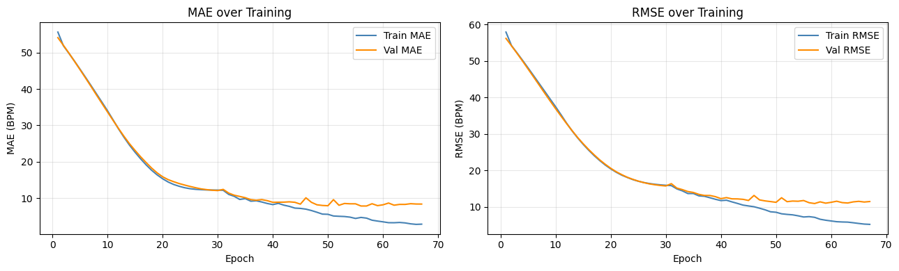
Training and validation MAE/RMSE over 68 epochs.
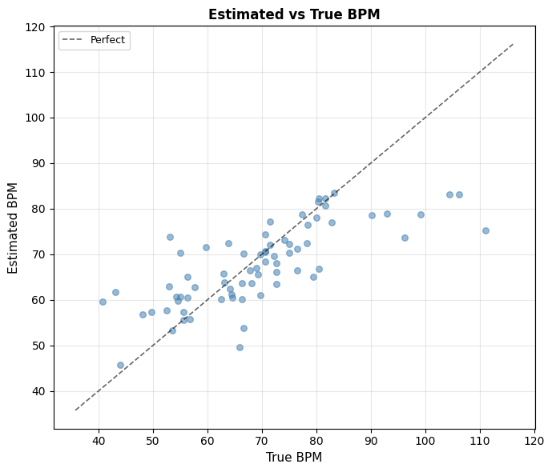
Estimated vs. true BPM on the validation set.
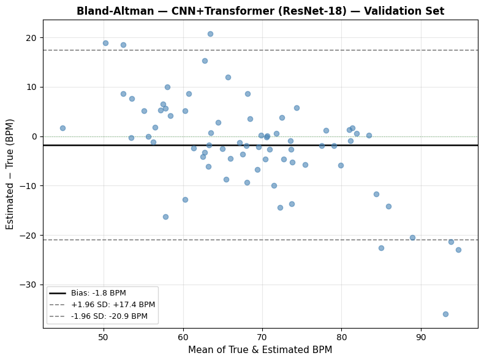
Bland-Altman plot showing bias of −1.8 BPM with ±1.96 SD limits of agreement.
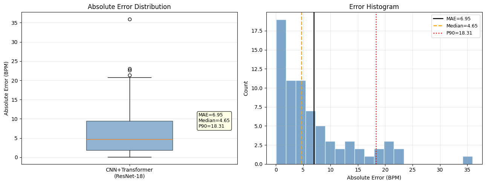
Absolute error distribution — MAE 6.95 BPM, Median AE 4.65 BPM, P90 18.31 BPM.
CNN per Frame + Signal Processing over Embeddings
The same ResNet-18 architecture was trained using a contrastive objective — maximizing similarity between frame embeddings at the same cardiac phase, and minimizing similarity at frames offset by half a cycle. At inference, frame embeddings are extracted and pairwise self-similarity is computed. The average similarity at each inter-frame interval constructs a periodicity signal whose peaks correspond to the heart rate period and its harmonics.
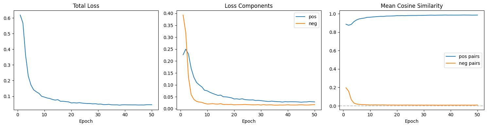
Contrastive training loss over 50 epochs — total loss, positive/negative components, and mean cosine similarity between same-phase and opposite-phase frame pairs.
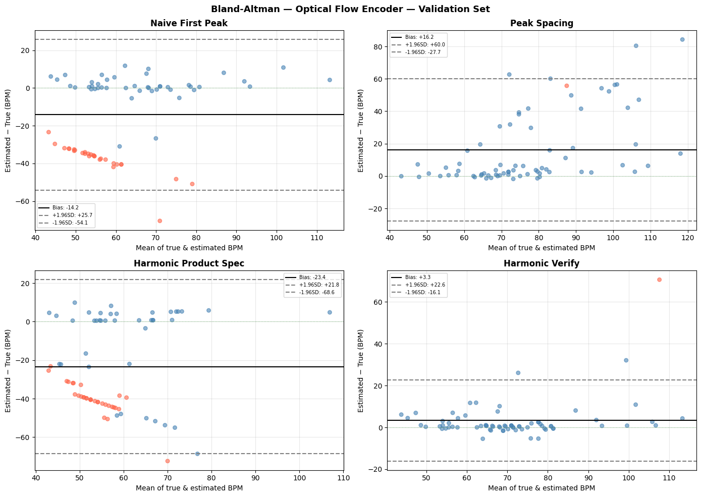
Bland-Altman plots for all four peak-finding sub-methods. Harmonic Verify (bottom right) achieves the tightest limits of agreement (bias +3.3 BPM, ±1.96 SD: −16.1 to +22.6).
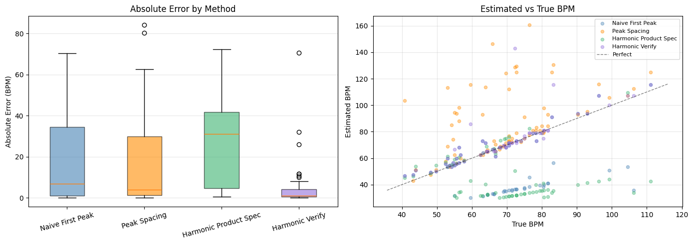
Absolute error distributions across sub-methods (left) and estimated vs. true BPM scatter (right). Harmonic Verify's error distribution is visibly tighter than all alternatives.
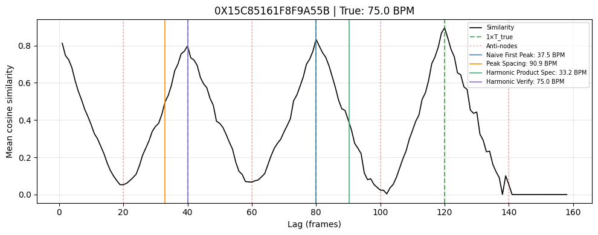
Sample periodicity signal for a 75.0 BPM clip. Harmonic Verify correctly identifies the cardiac period while other sub-methods lock onto harmonics.
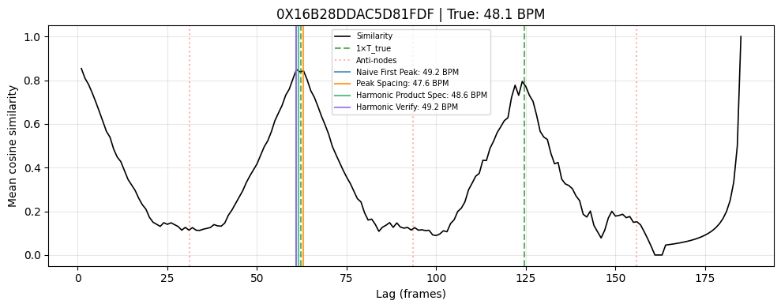
Sample periodicity signal for a 48.1 BPM clip. All methods converge near the true rate when the similarity signal is clean and well-defined.
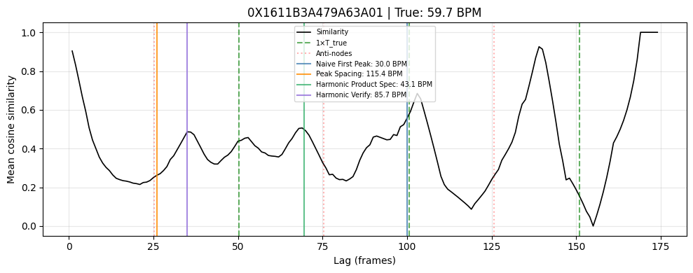
A challenging case (true: 59.7 BPM) where the similarity signal is noisy and all sub-methods fail to find the correct period — illustrating the method's remaining error cases.
Multiple Linear Regression with Optical Flow Features
Optical flow was computed for up to 400 frames per video. Per-pixel statistical features were extracted across all optical flow frames — mean, 90th percentile, 95th percentile, 99th percentile, 99.9th percentile, and standard deviation. These hand-crafted features were used to train a multiple linear regression model to predict heart rate, serving as a classical baseline against the learned approaches.
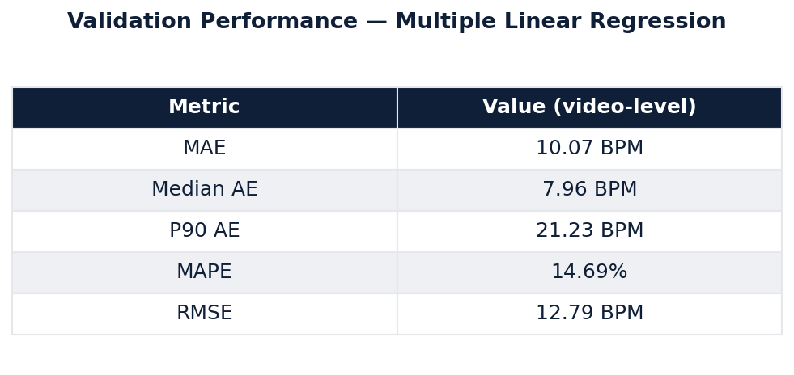
Validation performance at the video level (clip predictions averaged per video). The model achieves better-than-random performance despite its simplicity.
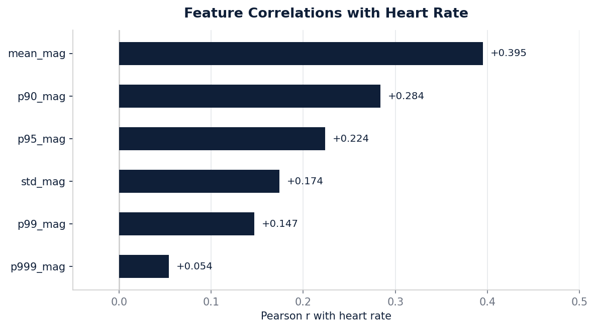
Pearson correlations between each feature and heart rate. Mean flow magnitude shows the strongest individual relationship (r = 0.395), consistent with the intuition that faster hearts produce more motion per frame.
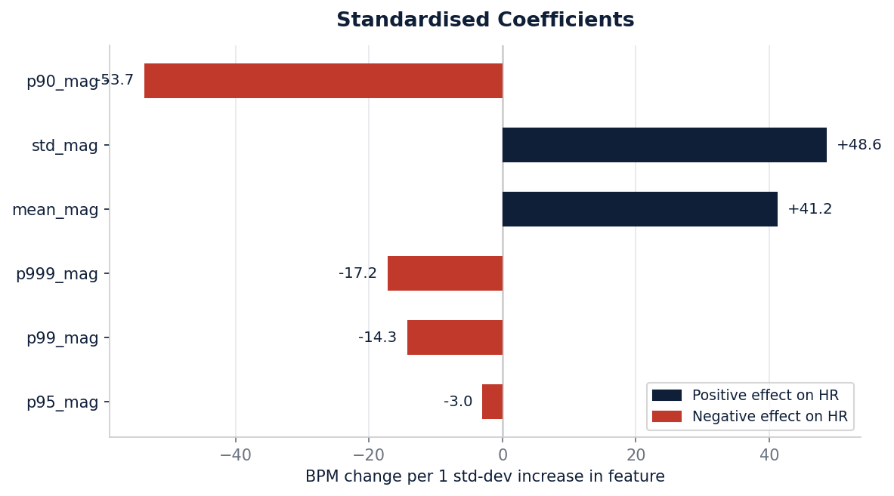
Standardised coefficients show the fitted model's weighting of each feature. The sign inversions relative to the Pearson correlations are a consequence of severe multicollinearity rather than true negative relationships.
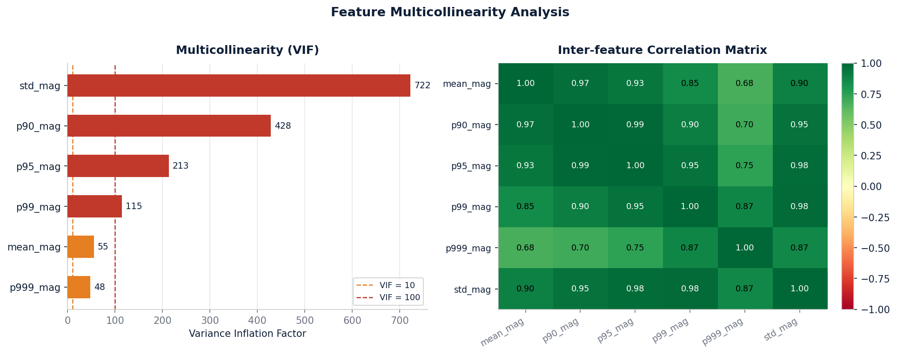
All six features are highly correlated with one another (r > 0.67 for every pair), producing VIFs in the hundreds. Individual coefficients should not be interpreted causally — the Pearson correlations are a more reliable guide to each feature's relationship with heart rate.
Results
All methods evaluated on the Stanford EchoNet-Dynamic dataset. Lower is better.
| Method | MAE (BPM) | Median AE (BPM) | P90 AE (BPM) |
|---|---|---|---|
| End-to-End (CNN + Transformer) | 6.95 | 4.65 | 18.31 |
| CNN + Signal Processing | 4.07 | 0.96 | 8.02 |
| Multiple Linear Regression (Optical Flow Features) | 10.07 | 7.96 | 21.23 |